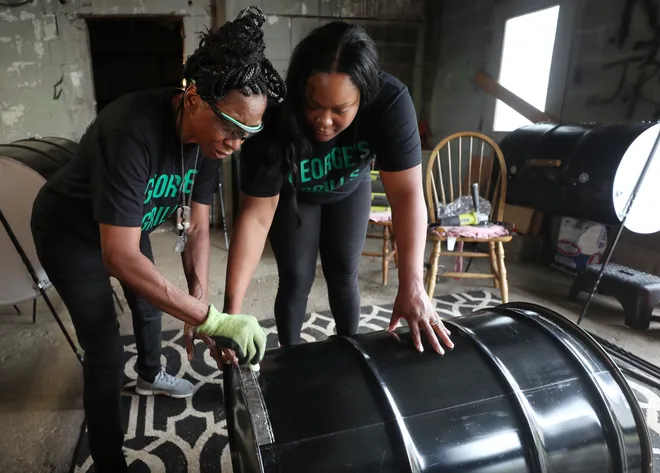

 <!DOCTYPE html>
<html>
  <head>
    <meta charset="UTF-8">
    <link rel="stylesheet" href="style.css">
    <link rel="preconnect" href="https://fonts.googleapis.com">
  <link rel="preconnect" href="https://fonts.gstatic.com" crossorigin>
  <link href="https://fonts.googleapis.com/css2?family=Comfortaa:wght@300;400&family=Playfair+Display&family=Poppins:wght@300&display=swap" rel="stylesheet"> 
    <meta name="viewport" content="width=device-width, initial-scale=1.0">
  </head>
    <style>
h1{color: black;font-size:30px; margin-top: 50px; margin-bottom: 25px; margin-right: 150px; margin-left: 80px;}
h2{color: black;}
h3{color: black;}
p{color: black; font-size:30px; }
body {margin:0 ;}
.pill-nav a {display: inline-block; color:black; text-align: center; padding: 14px; text-decoration: none; font-size: 45px; border-radius: 5px;}
.pill-nav a:hover { background-color: black; color: white;}
.pill-nav a.active {background-color: black; color: white;}
img {border-radius: 1%;}

.fwh-slide{
height:199vh;
background: linear-gradient(#c3c3c3,#c6c6c6,#5a5a5a);
box-sizing: border-box;}
</style>

<style type="text/css">
#slider{overflow: hidden;}
h3{margin-top: 100px; margin-bottom: 100px; margin-right: 150px; margin-left: 80px; font-size: 50px;}
text{text-align: center; font-size: 50px; color: black; padding: 5px; color: white; text-shadow: 1px 1px 2px black, 0 0 25px blue, 0 0 5px darkblue;}
</style>
</html>
<body>
  <section class="fwh-slide">
  <center><div class="pill-nav">
    <a href="index.html">Home</a>
    <a href="prices.html">Prices</a>
    <a class="active" href="aboutus.html">About</a>
  </div>
  <hr>
</center>
      </div>
    <center><title>George's  Grill owner</title></center>
  
    <center><left><h1>ABOUT THE OWNER</h1></left>
      <a href="https://www.beaconjournal.com/story/news/2021/08/16/focus-black-owned-business-georges-grills-builds-grandfathers-legacy/5489293001/">
         
        </a></div>
    <h2>My name is Deborah Turner, Founder of George's  Grill <br></h2></center> 

    <h3><center>George's grill:<br>George's grill name from the man who made all of this possible George Hammett, who made barbecue grills that became known throughout the area.
      The grills are made from 55-gallon drums cut open with an angle or plasma cutter. Our grills are stainless steel, customers may paint the grill if they choose to do so with heat resistant paint to their liking.
      Then the grills are finished with hinges to attach the lid, with legs bolted on. </center></h3>
<hr>
         <footer><center><p>You can contact us at <br>Phone Numbers:<br>Larenda Walker: (330)-706-8075
          <br>Debarah turner: (330)-761-8117<br>Email: georgegrills619@gmail.com </p></center></footer>
          <hr>
</section>
</body>
</html> 